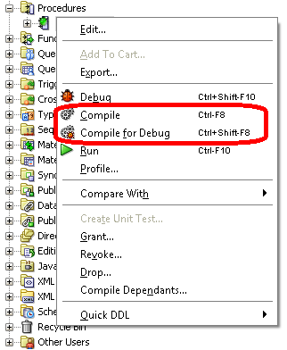

For pretty much my entire career as a GIS developer, I have worked with Oracle Database, and increasingly with Oracle Spatial and PL/SQL. As frequently as I find myself doing the same things repeatedly in Oracle, I find it very handy to have a "cheat sheet" such as this to remind me of syntax, object names, and so forth. Links to Oracle documentation throughout this text are for version 11g Release 2 (11.2).
It's always good to know which version of Oracle you're dealing with, as there can be significant differences between versions. Below are two different ways to get the Oracle Database version.
SELECT * FROM PRODUCT_COMPONENT_VERSION;
| PRODUCT | VERSION | STATUS |
|---|---|---|
| NLSRTL | 11.2.0.4.0 | Production |
| Oracle Database 11g Enterprise Edition | 11.2.0.4.0 | 64bit Production |
| PL/SQL | 11.2.0.4.0 | Production |
| TNS for Solaris: | 11.2.0.4.0 | Production |
SELECT * FROM V$VERSION;
| BANNER |
|---|
| Oracle Database 11g Enterprise Edition Release 11.2.0.4.0 - 64bit Production |
| PL/SQL Release 11.2.0.4.0 - Production |
| CORE 11.2.0.4.0 Production |
| TNS for Solaris: Version 11.2.0.4.0 - Production |
| NLSRTL Version 11.2.0.4.0 - Production |
There are at least four different ways to get the name of the database:
SELECT * FROM GLOBAL_NAME;
ORA_DATABASE_NAME event attribute function,
SELECT ORA_DATABASE_NAME FROM DUAL;
SELECT SYS_CONTEXT('USERENV', 'DB_NAME') AS DB_NAME FROM DUAL;
SELECT "NAME" FROM V$DATABASE;
The REGEXP_SUBSTR function can be used to "transpose" a comma-separated list to a recordset.
SELECT TRIM(REGEXP_SUBSTR('One, Two, Three', '[^,]+', 1, LEVEL)) AS "VALUE"
FROM DUAL
CONNECT BY (REGEXP_SUBSTR('One, Two, Three', '[^,]+', 1, LEVEL) IS NOT NULL);
| VALUE |
|---|
| One |
| Two |
| Three |
Most data dictionary views have three versions, each of which begins with one of the following prefixes:
USER_ - describes all objects of a given type owned by the current userALL_ - describes all objects of a given type accessible to the current userDBA_ - describes all objects of a given type in the databaseIn most cases, each version of the views has the same set of fields, except that the USER_ version does not have the OWNER field. Some exceptions are noted below.
(Several of the more commonly used data dictionary views and their more interesting fields are demonstrated by the Oracle query template file in the DumpRows project.)
The undocumented SYS.ALL_PROBE_OBJECTS view reports similar information to the PLSQL_OBJECT_SETTINGS data dictionary views (though the latter are probably more reliable). If installed, it can be queried thus:
SELECT OWNER, OBJECT_NAME, OBJECT_TYPE, CREATED, LAST_DDL_TIME FROM SYS.ALL_PROBE_OBJECTS WHERE (DEBUGINFO = 'T') ORDER BY OWNER, OBJECT_TYPE, OBJECT_NAME;
Note some key differences between this and the PLSQL_OBJECT_SETTINGS views:
SYS. schema qualifier is required, as there is no public synonym for ALL_PROBE_OBJECTS.SYS.ALL_PROBE_OBJECTS does not provide optimization level (whereas the PLSQL_OBJECT_SETTINGS views do).SYS.ALL_PROBE_OBJECTS uses 'T' and 'F' (for DEBUGINFO), whereas the PLSQL_OBJECT_SETTINGS views use 'TRUE' and 'FALSE' (for PLSQL_DEBUG).More details about PL/SQL debug settings are given in the Debug Settings section (under PL/SQL, below).
While DBA_VIEWS.TEXT, DBA_MVIEWS."QUERY", DBA_TRIGGERS.TRIGGER_BODY, and DBA_SOURCE.TEXT can be used to get the DDL of a view, materialized view, trigger, or package/procedure/function/trigger/type (respectively); the DBMS_METADATA.GET_DDL function can be used to get the DDL of any object.
SELECT DBMS_METADATA.GET_DDL(OBJECT_TYPE, OBJECT_NAME, OWNER) AS TEXT FROM (SELECT * FROM DBA_OBJECTS WHERE (OBJECT_NAME = 'name'));
The following query is useful for displaying column definitions as in a CREATE TABLE statement (and is also a good demonstration of the CASE expression).
SELECT
COLUMN_NAME,
CASE
WHEN (CHAR_LENGTH > 0)
THEN DATA_TYPE || '(' || CHAR_LENGTH || ')'
WHEN (DATA_PRECISION IS NULL)
THEN CASE WHEN (DATA_SCALE IS NULL) THEN DATA_TYPE ELSE 'INTEGER' END
ELSE
DATA_TYPE || '(' || DATA_PRECISION ||
CASE WHEN (DATA_SCALE > 0) THEN ',' || DATA_SCALE END || ')'
END AS DATATYPE
FROM DBA_TAB_COLUMNS
WHERE (TABLE_NAME = 'table')
ORDER BY COLUMN_ID;
And speaking of...
The following example goes through the process of creating and altering tables, illustrating the following concepts:
We'll start by creating two tables: one for artists, and another for albums released by those artists. In these tables:
ARTIST has a single primary key field (also called ARTIST).ALBUM has a composite primary key (consisting of both the ARTIST and TITLE fields), so it must be defined out-of-line.ALBUM.ARTIST is a foreign key that references the ARTIST table (and since we did not specify a field, this foreign key implicitly references the primary key field of the ARTIST table).ALBUM has a check constraint to ensure that RELEASE_YEAR is between 1 and 9999.CREATE TABLE ARTIST (ARTIST VARCHAR2(50) PRIMARY KEY); CREATE TABLE ALBUM ( ARTIST VARCHAR2(50) REFERENCES ARTIST, TITLE VARCHAR2(100), RELEASE_YEAR INTEGER CHECK (RELEASE_YEAR BETWEEN 1 AND 9999), PRIMARY KEY (ARTIST, TITLE) );
Note that above, the constraints are defined without names, which means that Oracle generates a cryptic name (like SYS_C0062877) for each of them. If the constraints are to be referred to programatically, it is probably better to name them. Below are the same two CREATE TABLE statements with names given to the constraints.
CREATE TABLE ARTIST (ARTIST VARCHAR2(50) CONSTRAINT ARTIST_PKC PRIMARY KEY);
CREATE TABLE ALBUM
(
ARTIST VARCHAR2(50) CONSTRAINT ALBUM_ARTIST_FKC REFERENCES ARTIST,
TITLE VARCHAR2(100),
RELEASE_YEAR INTEGER
CONSTRAINT ALBUM_RELEASE_YEAR_CKC CHECK (RELEASE_YEAR BETWEEN 1 AND 9999),
CONSTRAINT ALBUM_PKC PRIMARY KEY (ARTIST, TITLE)
);
Suppose you decide it makes more sense for ALBUM.RELEASE_YEAR to be a number with a precision (maximum number of significant digits) of 4, rather than an ANSI integer with a check constraint:
ALTER TABLE ALBUM MODIFY (RELEASE_YEAR NUMBER(4));
Say you also want to store the genre of each album, so you create a new GENRE table and modify ALBUM as follows:
CREATE TABLE GENRE
(
GENRE VARCHAR2(25)
CONSTRAINT GENRE_PKC PRIMARY KEY
CONSTRAINT GENRE_CKC CHECK (GENRE = UPPER(TRIM(GENRE)))
);
ALTER TABLE ALBUM ADD
(
GENRE VARCHAR2(25) DEFAULT 'ROCK'
CONSTRAINT ALBUM_GENRE_FKC REFERENCES GENRE,
NOTES VARCHAR2(100)
);
The syntax of each column definition is essentially the same as in a CREATE TABLE statement. Note here that the GENRE value of all records in the GENRE table must be uppercase (and have no leading or trailing spaces), and ALBUM.GENRE has a default value of 'ROCK' (which means that the GENRE table must have a record with a GENRE value of 'ROCK').
Now let's say you want to track whether or not each artist is still living.
ALTER TABLE ARTIST ADD (ALIVE CHAR(1) CHECK (ALIVE IN ('Y', 'N')));
On second thought, never mind, that was a silly idea. Who cares if the artist is dead or alive?
ALTER TABLE ARTIST DROP COLUMN ALIVE;
Note the above syntax works only for single fields. The following syntax could also have been used (multiple fields would be comma-separated).
ALTER TABLE ARTIST DROP (ALIVE);
If you want to be able to insert an ALBUM record with a new genre without first having to insert a new GENRE record, you could automate this by creating a trigger on the ALBUM table to insert the new GENRE record for you.
CREATE TRIGGER ALBUM_GENRE_TRIGGER
BEFORE INSERT OR UPDATE ON ALBUM
FOR EACH ROW
WHEN (NEW.GENRE IS NOT NULL)
DECLARE
n PLS_INTEGER;
s VARCHAR2(32);
BEGIN
/* If no other genre like this one already exists, add it to the list. */
SELECT COUNT(*) INTO n FROM GENRE WHERE (GENRE = UPPER(TRIM(:NEW.GENRE)));
IF (n < 1) THEN
INSERT INTO GENRE VALUES (UPPER(TRIM(:NEW.GENRE)));
:NEW.GENRE := UPPER(TRIM(:NEW.GENRE));
RETURN;
END IF;
/* Since there is already a genre like this one, use the existing one. */
SELECT GENRE INTO s FROM GENRE WHERE (GENRE = UPPER(TRIM(:NEW.GENRE)));
:NEW.GENRE := s;
END;
/
It's always good to know which version of Oracle Spatial you're dealing with, as there can be significant differences between versions.
SELECT SDO_VERSION FROM DUAL;
| SDO_VERSION |
|---|
| 11.2.0.4.0 |
Here's a breakdown of the SDO_GEOMETRY object type:
| Attribute | Type | Description |
|---|---|---|
| SDO_GTYPE | NUMBER | A 4-digit number in the form DLTT, where:
|
| SDO_SRID | NUMBER | Spatial Reference Identifier (see SRIDs, below) |
| SDO_POINT | SDO_POINT_TYPE | Can be used for optimal storage of point geometries (rarely used in practice) |
| SDO_ELEM_INFO | SDO_ELEM_INFO_ARRAY | Specifies how to interpret ordinates. Typically, one set of 3 numbers, as described below. (For compound elements, there is an additional set for each subelement.)
|
| SDO_ORDINATES | SDO_ORDINATE_ARRAY | Ordinates (whose interpretation depends on SDO_ELEM_INFO) |
Common SDO_GTYPE values:
| Value | Description |
|---|---|
| 2001 | 2-dimensional point with no linear referencing |
| 2002 | 2-dimensional line string with no linear referencing |
| 2003 | 2-dimensional polygon (with no linear referencing) |
Common element type values and corresponding interpretations (from SDO_ELEM_INFO, above):
| Value | Description | Interpretation (3rd number in set) |
|---|---|---|
| 1 | Point (or orientation for an oriented point) |
|
| 2 | Line string |
|
| 1003 | Exterior polygon ring (counterclockwise) |
|
Here's how to construct an SDO_GEOMETRY object:
SELECT
MDSYS.SDO_GEOMETRY(
2003, /* 2-dimensional polygon */
srid, /* projected coordinate system */
NULL, /* not using optimal point storage */
MDSYS.SDO_ELEM_INFO_ARRAY(1, 1003, 4), /* exterior polygon ring, circle */
MDSYS.SDO_ORDINATE_ARRAY(
center_x, center_y + radius,
center_x + radius, center_y,
center_x, center_y - radius)) AS SHAPE
FROM DUAL;
This would create a circle. Note:
SRID must reference a projected coordinate system.CREATE_CIRCLE (under PL/SQL, below) shows how to do this programatically.The SDO_UTIL.GETVERTICES function is very useful for examining the coordinates of a geometry.
SELECT GV."ID", GV.X, GV.Y FROM table, TABLE(SDO_UTIL.GETVERTICES(field)) GV WHERE (condition) ORDER BY GV."ID";
This is how Oracle recommends to validate spatial geometries.
SELECT
table.ROWID,
SDO_GEOM.VALIDATE_GEOMETRY_WITH_CONTEXT(table.field, GM.SDO_DIMINFO) AS VALID
FROM
schema.table,
(
SELECT SDO_DIMINFO
FROM MDSYS.SDO_GEOM_METADATA_TABLE
WHERE (SDO_OWNER = 'schema') AND (SDO_TABLE_NAME = 'table')
) GM;
If a table has an SDO_GEOMETRY field, the following steps can be used to "spatialize" it so that it can be used by Oracle Spatial and other software.
Determine the extents of the geometry.
SELECT MIN(X), MAX(X), MIN(Y), MAX(Y) FROM table, TABLE(SDO_UTIL.GETVERTICES(field));
To add a 5% buffer at each boundary (to allow for potential expansion):
SELECT
(MIN_X - DX) AS MIN_X1, (MAX_X + DX) AS MAX_X1,
(MIN_Y - DY) AS MIN_Y1, (MAX_Y + DY) AS MAX_Y1
FROM
(
SELECT
MIN_X, MAX_X, (0.05 * (MAX_X - MIN_X)) AS DX,
MIN_Y, MAX_Y, (0.05 * (MAX_Y - MIN_Y)) AS DY
FROM
(
SELECT
MIN(X) AS MIN_X, MAX(X) AS MAX_X,
MIN(Y) AS MIN_Y, MAX(Y) AS MAX_Y
FROM table, TABLE(SDO_UTIL.GETVERTICES(field))
)
);
Insert a record into MDSYS.SDO_GEOM_METADATA_TABLE.
INSERT INTO MDSYS.SDO_GEOM_METADATA_TABLE
VALUES
(
'schema',
'table',
'field',
SDO_DIM_ARRAY
(
SDO_DIM_ELEMENT('X', min_x, max_x, 0.05),
SDO_DIM_ELEMENT('Y', min_y, max_y, 0.05)
),
srid
);
Create a spatial index on the SDO_GEOMETRY field.
CREATE INDEX index ON table(field) INDEXTYPE IS MDSYS.SPATIAL_INDEX;
According to Oracle: "All geometries in a geometry column must have the same SDO_SRID value if a spatial index will be built on that column." Oracle stores spatial reference systems (identified by SRID) in the SDO_COORD_REF_SYS table. This table includes many well-known EPSG SRIDs, as well as some that are specific to Oracle (most of which can be thought of as Oracle-specific versions of their EPSG counterparts). For example, the following EPSG SRIDs, along with their Oracle-specific equivalents, can be found in the table.
SELECT SRID, COORD_REF_SYS_NAME, CASE WHEN (IS_LEGACY = 'TRUE') THEN INFORMATION_SOURCE ELSE DATA_SOURCE END AS "SOURCE" FROM SDO_COORD_REF_SYS WHERE (SRID IN (4269, 4326, 8265, 8307)) ORDER BY SRID;
| SRID | COORD_REF_SYS_NAME | SOURCE |
|---|---|---|
| 4269 | NAD83 | EPSG |
| 4326 | WGS 84 | EPSG |
| 8265 | Longitude / Latitude (NAD 83) | Oracle |
| 8307 | Longitude / Latitude (WGS 84) | Oracle |
Note that Oracle does not store the ESRI SRIDs for State Plane Coordinate System (SPCS) spatial references. For example, if we try to look up the three SRIDs for the Texas South Central Zone (FIPS 4204, in feet), we get results for the EPSG SRID (2278) and its Oracle-specific equivalent (41153), but not the ESRI SRID (102740).
SELECT SRID, COORD_REF_SYS_NAME, CASE WHEN (IS_LEGACY = 'TRUE') THEN INFORMATION_SOURCE ELSE DATA_SOURCE END AS "SOURCE" FROM SDO_COORD_REF_SYS WHERE (SRID IN (2278, 41153, 102740)) ORDER BY SRID;
| SRID | COORD_REF_SYS_NAME | SOURCE |
|---|---|---|
| 2278 | NAD83 / Texas South Central (ftUS) | EPSG |
| 41153 | Texas 4204, South Central Zone (1983, US Survey feet) | Oracle |
Data on units can be found by joining with the SDO_COORD_AXES and SDO_UNITS_OF_MEASURE tables.
SELECT
RS.SRID, RS.COORD_REF_SYS_NAME AS "NAME", RS.COORD_REF_SYS_KIND AS KIND,
AU.AXES, AU.UNIT_OF_MEAS_TYPE AS UOM_TYPE, AU.UNIT_OF_MEAS_NAME AS UOM_NAME
FROM
(
SELECT SRID, COORD_REF_SYS_NAME, COORD_REF_SYS_KIND, COORD_SYS_ID
FROM SDO_COORD_REF_SYS
WHERE (SRID IN (2278, 3857, 4269, 4326, 32615))
) RS
INNER JOIN
(
SELECT
SDO_COORD_AXES.COORD_SYS_ID,
(
LISTAGG(SDO_COORD_AXES.COORD_AXIS_ABBREVIATION, ', ')
WITHIN GROUP (ORDER BY COORD_AXIS_ABBREVIATION)
) AS AXES,
SDO_UNITS_OF_MEASURE.UNIT_OF_MEAS_TYPE,
SDO_UNITS_OF_MEASURE.UNIT_OF_MEAS_NAME
FROM
SDO_COORD_AXES
INNER JOIN SDO_UNITS_OF_MEASURE
ON (SDO_COORD_AXES.UOM_ID = SDO_UNITS_OF_MEASURE.UOM_ID)
GROUP BY
SDO_COORD_AXES.COORD_SYS_ID,
SDO_UNITS_OF_MEASURE.UNIT_OF_MEAS_TYPE,
SDO_UNITS_OF_MEASURE.UNIT_OF_MEAS_NAME
) AU
ON (RS.COORD_SYS_ID = AU.COORD_SYS_ID)
ORDER BY RS.COORD_REF_SYS_KIND, RS.SRID;
| SRID | NAME | KIND | AXES | UOM_TYPE | UOM_NAME |
|---|---|---|---|---|---|
| 4269 | NAD83 | GEOGRAPHIC2D | Lat, Long | angle | degree (supplier to define representation) |
| 4326 | WGS 84 | GEOGRAPHIC2D | Lat, Long | angle | degree (supplier to define representation) |
| 2278 | NAD83 / Texas South Central (ftUS) | PROJECTED | X, Y | length | US survey foot |
| 3857 | WGS 84 / Pseudo-Mercator | PROJECTED | X, Y | length | metre |
| 32615 | WGS 84 / UTM zone 15N | PROJECTED | E, N | length | metre |
PLS_INTEGER is the recommended integral data type, as long as the value can be stored in 32 bits. Below are some examples of operations with PLS_INTEGER, including division and the FLOOR and CEIL functions.
DECLARE
n PLS_INTEGER;
BEGIN
n := 400 / 400;
DBMS_OUTPUT.PUT_LINE('400 / 400 = ' || n);
n := CEIL(400 / 400);
DBMS_OUTPUT.PUT_LINE('CEIL(400 / 400) = ' || n);
n := 401 / 400;
DBMS_OUTPUT.PUT_LINE('401 / 400 = ' || n);
n := CEIL(401 / 400);
DBMS_OUTPUT.PUT_LINE('CEIL(401 / 400) = ' || n);
n := 599 / 400;
DBMS_OUTPUT.PUT_LINE('599 / 400 = ' || n);
n := CEIL(599 / 400);
DBMS_OUTPUT.PUT_LINE('CEIL(599 / 400) = ' || n);
n := 600 / 400;
DBMS_OUTPUT.PUT_LINE('600 / 400 = ' || n);
n := FLOOR(600 / 400);
DBMS_OUTPUT.PUT_LINE('FLOOR(600 / 400) = ' || n);
n := 799 / 400;
DBMS_OUTPUT.PUT_LINE('799 / 400 = ' || n);
n := FLOOR(799 / 400);
DBMS_OUTPUT.PUT_LINE('FLOOR(799 / 400) = ' || n);
n := 800 / 400;
DBMS_OUTPUT.PUT_LINE('800 / 400 = ' || n);
END;
/
/* Output:
*
* 400 / 400 = 1
* CEIL(400 / 400) = 1
* 401 / 400 = 1
* CEIL(401 / 400) = 2
* 599 / 400 = 1
* CEIL(599 / 400) = 2
* 600 / 400 = 2
* FLOOR(600 / 400) = 1
* 799 / 400 = 2
* FLOOR(799 / 400) = 1
* 800 / 400 = 2
*/
Below is a demonstration of the BOOLEAN data type.
DECLARE
bt BOOLEAN;
bf BOOLEAN;
bn BOOLEAN;
BEGIN
bt := TRUE;
bf := FALSE;
bn := NULL;
IF bt THEN DBMS_OUTPUT.PUT_LINE('bt'); END IF;
IF bf THEN DBMS_OUTPUT.PUT_LINE('bf'); END IF;
IF bn THEN DBMS_OUTPUT.PUT_LINE('bn'); END IF;
IF NOT bt THEN DBMS_OUTPUT.PUT_LINE('NOT bt'); END IF;
IF NOT bf THEN DBMS_OUTPUT.PUT_LINE('NOT bf'); END IF;
IF NOT bn THEN DBMS_OUTPUT.PUT_LINE('NOT bn'); END IF;
IF bt IS NULL THEN DBMS_OUTPUT.PUT_LINE('bt IS NULL'); END IF;
IF bf IS NULL THEN DBMS_OUTPUT.PUT_LINE('bf IS NULL'); END IF;
IF bn IS NULL THEN DBMS_OUTPUT.PUT_LINE('bn IS NULL'); END IF;
END;
/
/* Output:
*
* bt
* NOT bf
* bn IS NULL
*/
Below is a demonstration of GUID/UUID processing.
DECLARE
s_guid RAW(32);
f_guid CHAR(38);
BEGIN
/* Generate a "raw" system GUID. */
s_guid := SYS_GUID();
/* Format it for user-friendly display. */
f_guid := '{' ||
SUBSTR(s_guid, 1, 8) || '-' ||
SUBSTR(s_guid, 9, 4) || '-' ||
SUBSTR(s_guid, 13, 4) || '-' ||
SUBSTR(s_guid, 17, 4) || '-' ||
SUBSTR(s_guid, 21, 12) || '}';
END;
/
Below are a few different ways to use the BULK COLLECT clause to retrieve a list of roles granted to the current user.
DECLARE
TYPE ROLE_TABLE IS TABLE OF USER_ROLE_PRIVS%ROWTYPE;
role_records ROLE_TABLE;
BEGIN
SELECT *
BULK COLLECT INTO role_records
FROM USER_ROLE_PRIVS
ORDER BY GRANTED_ROLE;
FOR i IN role_records.FIRST .. role_records.LAST LOOP
DBMS_OUTPUT.PUT_LINE(role_records(i).GRANTED_ROLE);
END LOOP;
END;
/
DECLARE
CURSOR ROLE_CURSOR IS SELECT GRANTED_ROLE FROM USER_ROLE_PRIVS;
TYPE ROLE_TABLE IS TABLE OF ROLE_CURSOR%ROWTYPE;
role_records ROLE_TABLE;
BEGIN
SELECT GRANTED_ROLE
BULK COLLECT INTO role_records
FROM USER_ROLE_PRIVS
ORDER BY GRANTED_ROLE;
FOR i IN role_records.FIRST .. role_records.LAST LOOP
DBMS_OUTPUT.PUT_LINE(role_records(i).GRANTED_ROLE);
END LOOP;
END;
/
DECLARE
TYPE ROLE_TABLE IS TABLE OF USER_ROLE_PRIVS.GRANTED_ROLE%TYPE;
role_records ROLE_TABLE;
BEGIN
SELECT GRANTED_ROLE
BULK COLLECT INTO role_records
FROM USER_ROLE_PRIVS
ORDER BY GRANTED_ROLE;
FOR i IN role_records.FIRST .. role_records.LAST LOOP
DBMS_OUTPUT.PUT_LINE(role_records(i));
END LOOP;
END;
/
Building on the previous example, the following shows how to pass a table as an argument to a procedure in order to determine which object privileges are granted to the current user (including those granted through roles, up to 3 levels deep).
/* This is necessary in order to use the collection type in SQL (below). */
CREATE TYPE NAME_TABLE IS TABLE OF VARCHAR2(30);
/
DECLARE
TYPE PRIV_TABLE IS TABLE OF DBA_TAB_PRIVS%ROWTYPE;
s VARCHAR2(128);
names0 NAME_TABLE;
names1 NAME_TABLE;
names2 NAME_TABLE;
privs PRIV_TABLE;
PROCEDURE GET_OBJ_PRIVS(
grantees IN NAME_TABLE,
obj_privs IN OUT NOCOPY PRIV_TABLE
) IS
BEGIN
SELECT *
BULK COLLECT INTO obj_privs
FROM DBA_TAB_PRIVS
WHERE (GRANTEE IN (SELECT * FROM TABLE(grantees)))
ORDER BY OWNER, TABLE_NAME, "PRIVILEGE";
END;
PROCEDURE GET_ROLES(
grantees IN NAME_TABLE,
granted_roles IN OUT NOCOPY NAME_TABLE
) IS
BEGIN
SELECT DISTINCT GRANTED_ROLE
BULK COLLECT INTO granted_roles
FROM DBA_ROLE_PRIVS
WHERE (GRANTEE IN (SELECT * FROM TABLE(grantees)))
ORDER BY GRANTED_ROLE;
END;
BEGIN
DBMS_OUTPUT.PUT_LINE('Object privileges granted directly:');
FOR r IN
(
SELECT DISTINCT OWNER, TABLE_NAME, "PRIVILEGE"
FROM USER_TAB_PRIVS
ORDER BY OWNER, TABLE_NAME, "PRIVILEGE"
) LOOP
s := r."PRIVILEGE" || ' on ' || r.OWNER || '.' || r.TABLE_NAME;
DBMS_OUTPUT.PUT_LINE(s);
END LOOP;
DBMS_OUTPUT.PUT_LINE(' ');
DBMS_OUTPUT.PUT_LINE('Roles granted directly (level 0):');
SELECT GRANTED_ROLE BULK COLLECT INTO names0 FROM USER_ROLE_PRIVS ORDER BY GRANTED_ROLE;
FOR i IN 1 .. names0.COUNT LOOP
DBMS_OUTPUT.PUT_LINE(names0(i));
END LOOP;
DBMS_OUTPUT.PUT_LINE(' ');
DBMS_OUTPUT.PUT_LINE('Object privileges granted through those roles:');
GET_OBJ_PRIVS(names0, privs);
FOR i IN 1 .. privs.COUNT LOOP
s := privs(i)."PRIVILEGE" || ' on ' || privs(i).OWNER || '.' || privs(i).TABLE_NAME;
DBMS_OUTPUT.PUT_LINE(s);
END LOOP;
DBMS_OUTPUT.PUT_LINE(' ');
DBMS_OUTPUT.PUT_LINE('Roles granted through those roles (level 1):');
GET_ROLES(names0, names1);
FOR i IN 1 .. names1.COUNT LOOP
DBMS_OUTPUT.PUT_LINE(names1(i));
END LOOP;
DBMS_OUTPUT.PUT_LINE(' ');
DBMS_OUTPUT.PUT_LINE('Object privileges granted through those roles:');
GET_OBJ_PRIVS(names1, privs);
FOR i IN 1 .. privs.COUNT LOOP
s := privs(i)."PRIVILEGE" || ' on ' || privs(i).OWNER || '.' || privs(i).TABLE_NAME;
DBMS_OUTPUT.PUT_LINE(s);
END LOOP;
DBMS_OUTPUT.PUT_LINE(' ');
DBMS_OUTPUT.PUT_LINE('Roles granted through those roles (level 2):');
GET_ROLES(names1, names2);
FOR i IN 1 .. names2.COUNT LOOP
DBMS_OUTPUT.PUT_LINE(names2(i));
END LOOP;
DBMS_OUTPUT.PUT_LINE(' ');
DBMS_OUTPUT.PUT_LINE('Object privileges granted through those roles:');
GET_OBJ_PRIVS(names2, privs);
FOR i IN 1 .. privs.COUNT LOOP
s := privs(i)."PRIVILEGE" || ' on ' || privs(i).OWNER || '.' || privs(i).TABLE_NAME;
DBMS_OUTPUT.PUT_LINE(s);
END LOOP;
END;
/
The following function demonstrates:
SDO_GEOMETRY object programatically
CREATE OR REPLACE FUNCTION CREATE_CIRCLE(
crsid IN INTEGER,
center_x IN NUMBER,
center_y IN NUMBER,
radius IN NUMBER
) RETURN SDO_GEOMETRY IS
s VARCHAR2(512);
geodetic_crs EXCEPTION;
elem_info SDO_ELEM_INFO_ARRAY;
ordinates SDO_ORDINATE_ARRAY;
center NUMBER;
sign_type SIGNTYPE;
file_handle UTL_FILE.FILE_TYPE;
BEGIN
/* If the SRID identifies a geodetic coordinate system, raise an error. */
SELECT COORD_REF_SYS_KIND INTO s FROM SDO_COORD_REF_SYS WHERE (SRID = crsid);
IF (s LIKE 'GEOGRAPHIC%') THEN RAISE geodetic_crs; END IF;
/* Build the SDO_ELEM_INFO attribute (circular exterior polygon ring). */
elem_info := SDO_ELEM_INFO_ARRAY();
elem_info.EXTEND(3);
elem_info(1) := 1;
elem_info(2) := 1003;
elem_info(3) := 4;
/* Build the SDO_ORDINATES attribute (three
* points on the circumference of the circle).
*/
ordinates := SDO_ORDINATE_ARRAY();
FOR i IN 1 .. 6 LOOP
ordinates.EXTEND(1);
IF (BITAND(i, 1) > 0) THEN
center := center_x;
ELSE
center := center_y;
END IF;
sign_type := SIGN(BITAND(i, 2) - BITAND(i, 6));
ordinates(i) := center + (sign_type * radius);
END LOOP;
/* Construct and return the SDO_GEOMETRY object. */
RETURN SDO_GEOMETRY(2003, crsid, NULL, elem_info, ordinates);
EXCEPTION
WHEN geodetic_crs THEN
RAISE_APPLICATION_ERROR(-20001, 'Coordinate system cannot be geodetic.');
WHEN OTHERS THEN
/* Open a text file in "append text" mode. (Note: LOG_DIR is a
* directory object that must appear in the ALL_DIRECTORIES view.)
*/
file_handle := UTL_FILE.FOPEN('LOG_DIR', 'error.log', 'a');
s := SQLERRM;
UTL_FILE.PUT_LINE(file_handle, s);
UTL_FILE.PUT_LINE(file_handle, DBMS_UTILITY.FORMAT_ERROR_BACKTRACE);
UTL_FILE.FCLOSE(file_handle);
END;
/
The following procedure demonstrates how to send an email using the UTL_SMTP package.
CREATE OR REPLACE PROCEDURE SEND_EMAIL(
domain IN VARCHAR2,
sender IN VARCHAR2,
recipient IN VARCHAR2,
subject IN VARCHAR2,
message IN VARCHAR2,
sender_name IN VARCHAR2 DEFAULT NULL,
recipient_name IN VARCHAR2 DEFAULT NULL
) IS
cn UTL_SMTP.CONNECTION;
from_name VARCHAR2(64);
to_name VARCHAR2(64);
BEGIN
/* Initiate the mail transaction. */
cn := UTL_SMTP.OPEN_CONNECTION('mail.' || domain);
UTL_SMTP.HELO(cn, domain);
UTL_SMTP.MAIL(cn, sender);
UTL_SMTP.RCPT(cn, recipient);
/* Determine "From" and "To" names. */
IF (sender_name IS NULL) THEN
from_name := sender;
ELSE
from_name := sender_name;
END IF;
IF (recipient_name IS NULL) THEN
to_name := recipient;
ELSE
to_name := recipient_name;
END IF;
/* Write the message. */
UTL_SMTP.OPEN_DATA(cn);
UTL_SMTP.WRITE_DATA(cn, 'From: ' || from_name || UTL_TCP.CRLF);
UTL_SMTP.WRITE_DATA(cn, 'To: ' || to_name || UTL_TCP.CRLF);
UTL_SMTP.WRITE_DATA(cn, 'Subject: ' || subject || UTL_TCP.CRLF);
UTL_SMTP.WRITE_DATA(cn, UTL_TCP.CRLF);
UTL_SMTP.WRITE_DATA(cn, message || UTL_TCP.CRLF);
/* End the transaction. */
UTL_SMTP.CLOSE_DATA(cn);
UTL_SMTP.QUIT(cn);
END;
/
PL/SQL code is compiled with an optimization level of 0, 1, or 2. (As mentioned above, the _PLSQL_OBJECT_SETTINGS views can be queried to determine with what optimization level a PL/SQL object was compiled.) The lower the optimization level, the more debug info is generated (but the slower it runs), and vice versa. In SQL Developer, the default optimization level is zero (maximum debug info, and also maximum slowness). This setting can be found under Tools > Preferences... > Database > PL/SQL Compiler > Optimization Level:
Note that this setting applies only when compiling PL/SQL code via the editor buttons. Compiling via the Compile and Compile for Debug items on the context menu has different results:
This article and this blog post explain optimization levels pretty well.